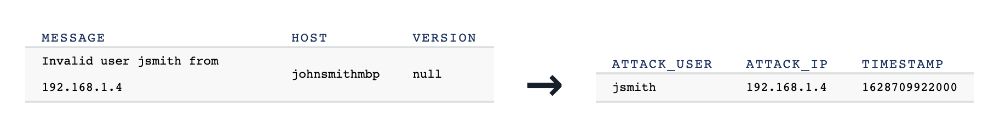

Detecting and Analyzing SSH Attacks
What is it?
There are lots of ways SSH can be abused but one of the most straightforward ways to detect a problem is to monitor for rejected logins. This recipe tracks Syslog data and streams out pairs of usernames and IPs of bad logins.

Cut to the code

(This recipe also is a great demonstration on how to run a self-managed connector)
Run the Syslog source connector locally to push syslog data into Confluent Cloud into a Kafka topic called syslog.
Then proceed with ksqlDB to process the Syslog messages.
-- Define Kafka parameters
DEFINE topic = 'syslog';
-- Extract relevant fields from log messages
CREATE OR REPLACE STREAM `syslog` WITH (
KAFKA_TOPIC = '${topic}',
VALUE_FORMAT = 'avro'
);
CREATE STREAM `by_facility` AS
SELECT TIMESTAMPTOSTRING(TIMESTAMP, 'yyyy-MM-dd HH:mm:ss') AS SYSLOG_TIMESTAMP,
HOST,
FACILITY,
MESSAGE,
REMOTEADDRESS
FROM `syslog`
PARTITION BY FACILITY
EMIT CHANGES;
-- Flag events with invalid users, and enrich with a new field 'FACILITY_DESCRIPTION'
CREATE STREAM `invalid_users` AS
SELECT SYSLOG_TIMESTAMP,
HOST,
FACILITY,
MESSAGE,
REMOTEADDRESS,
CASE WHEN FACILITY = 0 THEN 'kernel messages'
WHEN FACILITY = 1 THEN 'user-level messages'
WHEN FACILITY = 2 THEN 'mail system'
WHEN FACILITY = 3 THEN 'system daemons'
WHEN FACILITY = 4 THEN 'security/authorization messages'
WHEN FACILITY = 5 THEN 'messages generated internally by syslogd'
WHEN FACILITY = 6 THEN 'line printer subsystem'
ELSE '<unknown>'
END AS FACILITY_DESCRIPTION
FROM `by_facility`
WHERE MESSAGE LIKE 'Invalid user%'
EMIT CHANGES;
-- Create actionable stream of SSH attacks, enriched with user and IP
CREATE STREAM `ssh_attacks` AS
SELECT SYSLOG_TIMESTAMP,
FACILITY,
HOST,
FACILITY_DESCRIPTION,
SPLIT(REPLACE(MESSAGE,'Invalid user ',''),' from ')[1] AS ATTACK_USER,
SPLIT(REPLACE(MESSAGE,'Invalid user ',''),' from ')[2] AS ATTACK_IP
FROM `invalid_users`
EMIT CHANGES;
Launch Step-by-Step
Setup your Environment
-
Sign up for Confluent Cloud, a fully-managed Apache Kafka service.
-
After you log in to Confluent Cloud, click on
Add cloud environmentand name the environmentlearn-kafka. Using a new environment keeps your learning resources separate from your other Confluent Cloud resources. -
From the
Billing & paymentsection in the Menu, apply the promo codeC50INTEGto receive an additional $50 free usage on Confluent Cloud (details). -
Click on LEARN and follow the instructions to launch a Kafka cluster and to enable Schema Registry.
Read the data in
Create a file called Dockerfile to bundle a connect worker with kafka-connect-syslog:
#
# Copyright 2020 Confluent Inc.
#
# Licensed under the Apache License, Version 2.0 (the "License");
# you may not use this file except in compliance with the License.
# You may obtain a copy of the License at
#
# http://www.apache.org/licenses/LICENSE-2.0
#
# Unless required by applicable law or agreed to in writing, software
# distributed under the License is distributed on an "AS IS" BASIS,
# WITHOUT WARRANTIES OR CONDITIONS OF ANY KIND, either express or implied.
# See the License for the specific language governing permissions and
# limitations under the License.
FROM confluentinc/cp-server-connect-base:6.2.0
ENV CONNECT_PLUGIN_PATH="/usr/share/java,/usr/share/confluent-hub-components"
USER root
COPY --chown=appuser:appuser include/etc/confluent/docker /etc/confluent/docker
USER appuser
ARG CONNECTOR_OWNER=confluentinc
ARG CONNECTOR_NAME
ARG CONNECTOR_VERSION
RUN confluent-hub install --no-prompt confluent-hub install confluentinc/kafka-connect-syslog:1.3.4
CMD ["/etc/confluent/docker/run"]
Build the custom Docker image with the command:
docker build \
-t localbuild/connect_distributed_with_syslog:1.3.4 \
-f Dockerfile .
Create a file called docker-compose.yml with the following content, substituting your Confluent Cloud connection information:
---
version: '2'
services:
connect:
image: localbuild/connect_distributed_with_syslog:1.3.4
hostname: connect
container_name: connect
ports:
- "8083:8083"
environment:
CONNECT_BOOTSTRAP_SERVERS: $BOOTSTRAP_SERVERS
CONNECT_REST_PORT: 8083
CONNECT_GROUP_ID: "connect"
CONNECT_CONFIG_STORAGE_TOPIC: demo-connect-configs
CONNECT_OFFSET_STORAGE_TOPIC: demo-connect-offsets
CONNECT_STATUS_STORAGE_TOPIC: demo-connect-status
CONNECT_REPLICATION_FACTOR: 3
CONNECT_CONFIG_STORAGE_REPLICATION_FACTOR: 3
CONNECT_OFFSET_STORAGE_REPLICATION_FACTOR: 3
CONNECT_STATUS_STORAGE_REPLICATION_FACTOR: 3
CONNECT_KEY_CONVERTER: "org.apache.kafka.connect.storage.StringConverter"
CONNECT_VALUE_CONVERTER: "io.confluent.connect.avro.AvroConverter"
CONNECT_VALUE_CONVERTER_SCHEMAS_ENABLE: "true"
CONNECT_VALUE_CONVERTER_SCHEMA_REGISTRY_URL: $SCHEMA_REGISTRY_URL
CONNECT_VALUE_CONVERTER_BASIC_AUTH_CREDENTIALS_SOURCE: $BASIC_AUTH_CREDENTIALS_SOURCE
CONNECT_VALUE_CONVERTER_SCHEMA_REGISTRY_BASIC_AUTH_USER_INFO: $SCHEMA_REGISTRY_BASIC_AUTH_USER_INFO
CONNECT_REST_ADVERTISED_HOST_NAME: "connect"
CONNECT_PLUGIN_PATH: "/usr/share/java,/usr/share/confluent-hub-components"
CONNECT_LOG4J_ROOT_LOGLEVEL: INFO
CONNECT_LOG4J_LOGGERS: org.reflections=ERROR
# CLASSPATH required due to CC-2422
CLASSPATH: /usr/share/java/monitoring-interceptors/monitoring-interceptors-6.2.0.jar
# Connect worker
CONNECT_SECURITY_PROTOCOL: SASL_SSL
CONNECT_SASL_JAAS_CONFIG: $SASL_JAAS_CONFIG
CONNECT_SASL_MECHANISM: PLAIN
# Connect producer
CONNECT_PRODUCER_SECURITY_PROTOCOL: SASL_SSL
CONNECT_PRODUCER_SASL_JAAS_CONFIG: $SASL_JAAS_CONFIG
CONNECT_PRODUCER_SASL_MECHANISM: PLAIN
CONNECT_PRODUCER_INTERCEPTOR_CLASSES: "io.confluent.monitoring.clients.interceptor.MonitoringProducerInterceptor"
CONNECT_PRODUCER_CONFLUENT_MONITORING_INTERCEPTOR_SECURITY_PROTOCOL: SASL_SSL
CONNECT_PRODUCER_CONFLUENT_MONITORING_INTERCEPTOR_SASL_JAAS_CONFIG: $SASL_JAAS_CONFIG
CONNECT_PRODUCER_CONFLUENT_MONITORING_INTERCEPTOR_SASL_MECHANISM: PLAIN
# Connect consumer
CONNECT_CONSUMER_SECURITY_PROTOCOL: SASL_SSL
CONNECT_CONSUMER_SASL_JAAS_CONFIG: $SASL_JAAS_CONFIG
CONNECT_CONSUMER_SASL_MECHANISM: PLAIN
CONNECT_CONSUMER_INTERCEPTOR_CLASSES: "io.confluent.monitoring.clients.interceptor.MonitoringConsumerInterceptor"
CONNECT_CONSUMER_CONFLUENT_MONITORING_INTERCEPTOR_SECURITY_PROTOCOL: SASL_SSL
CONNECT_CONSUMER_CONFLUENT_MONITORING_INTERCEPTOR_SASL_JAAS_CONFIG: $SASL_JAAS_CONFIG
CONNECT_CONSUMER_CONFLUENT_MONITORING_INTERCEPTOR_SASL_MECHANISM: PLAIN
Run the container with:
docker-compose up -d
Now you should have Syslog messages being written to the topic syslog in Confluent Cloud.
Run stream processing app
TODO
-- Define Kafka parameters
DEFINE topic = 'syslog';
-- Extract relevant fields from log messages
CREATE OR REPLACE STREAM `syslog` WITH (
KAFKA_TOPIC = '${topic}',
VALUE_FORMAT = 'avro'
);
CREATE STREAM `by_facility` AS
SELECT TIMESTAMPTOSTRING(TIMESTAMP, 'yyyy-MM-dd HH:mm:ss') AS SYSLOG_TIMESTAMP,
HOST,
FACILITY,
MESSAGE,
REMOTEADDRESS
FROM `syslog`
PARTITION BY FACILITY
EMIT CHANGES;
-- Flag events with invalid users, and enrich with a new field 'FACILITY_DESCRIPTION'
CREATE STREAM `invalid_users` AS
SELECT SYSLOG_TIMESTAMP,
HOST,
FACILITY,
MESSAGE,
REMOTEADDRESS,
CASE WHEN FACILITY = 0 THEN 'kernel messages'
WHEN FACILITY = 1 THEN 'user-level messages'
WHEN FACILITY = 2 THEN 'mail system'
WHEN FACILITY = 3 THEN 'system daemons'
WHEN FACILITY = 4 THEN 'security/authorization messages'
WHEN FACILITY = 5 THEN 'messages generated internally by syslogd'
WHEN FACILITY = 6 THEN 'line printer subsystem'
ELSE '<unknown>'
END AS FACILITY_DESCRIPTION
FROM `by_facility`
WHERE MESSAGE LIKE 'Invalid user%'
EMIT CHANGES;
-- Create actionable stream of SSH attacks, enriched with user and IP
CREATE STREAM `ssh_attacks` AS
SELECT SYSLOG_TIMESTAMP,
FACILITY,
HOST,
FACILITY_DESCRIPTION,
SPLIT(REPLACE(MESSAGE,'Invalid user ',''),' from ')[1] AS ATTACK_USER,
SPLIT(REPLACE(MESSAGE,'Invalid user ',''),' from ')[2] AS ATTACK_IP
FROM `invalid_users`
EMIT CHANGES;